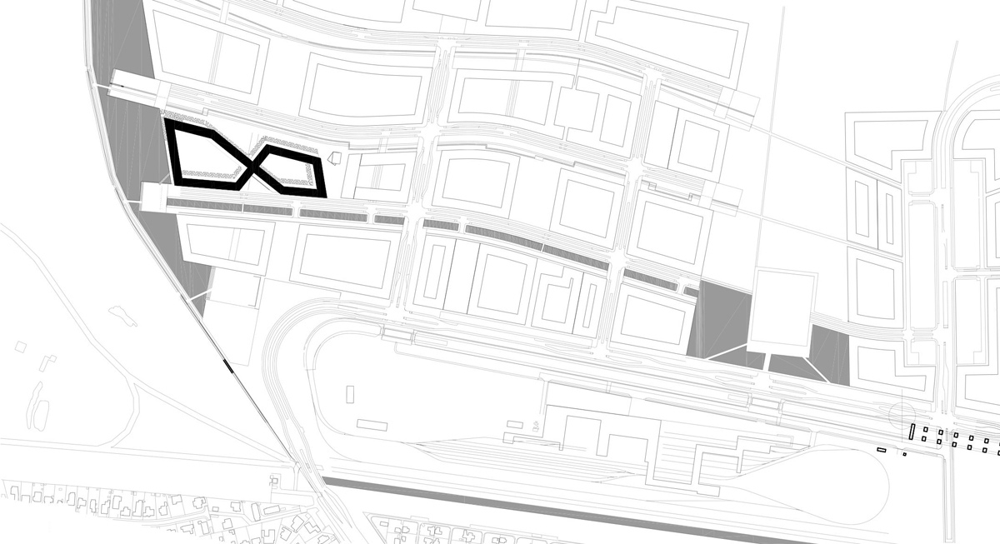
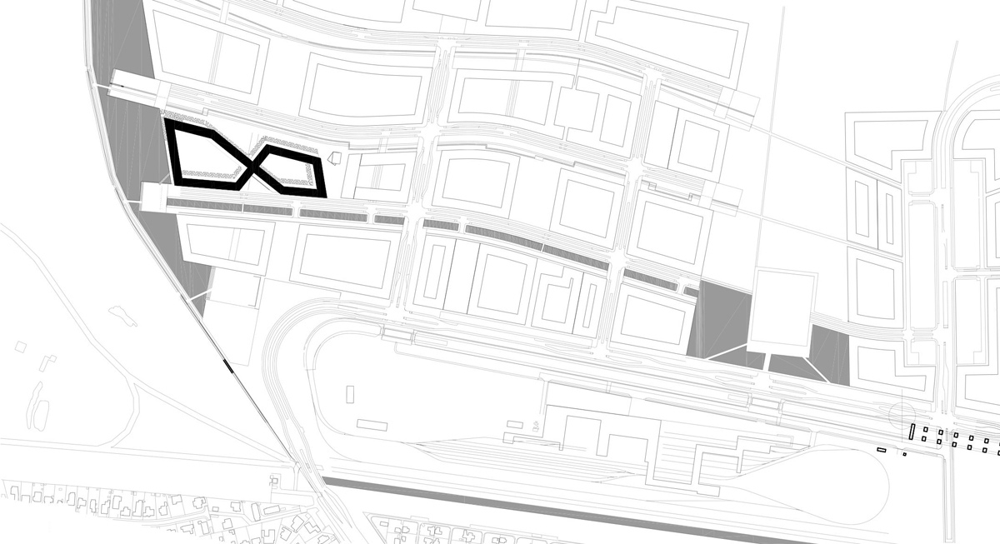

DENMARK
Kommuner Boundaries
Denmark, situated in Northern Europe, forms part of the Scandinavian region and is composed of the Jutland Peninsula and over 400 islands, the largest being Zealand, Funen, and Bornholm. Strategically located between the North Sea and the Baltic Sea, Denmark serves as a vital gateway for trade and cultural exchange in Europe. The country's compact geography, with a coastline stretching over 7,300 kilometers, has historically supported maritime industries, fostering global connections.
Denmark's urban development reflects a balance between economic growth, sustainability, and quality of life. The capital city, Copenhagen, situated on the island of Zealand, serves as the economic and cultural hub, with a reputation for progressive urban planning, green infrastructure, and smart mobility systems. Key cities such as Aarhus (a hub for education and culture), Odense (known for innovation and history), and Aalborg (a center for industry and logistics) anchor regional development across the country.
Denmark's urban regions are characterized by mixed-use developments, integrated public transport, and a strong focus on reducing carbon emissions, aligning with its national goal to achieve carbon neutrality by 2050. Urban areas are often well-connected to rural landscapes, with green spaces, cycling networks, and waterfront redevelopment projects playing a significant role in shaping modern Danish cities.
 
